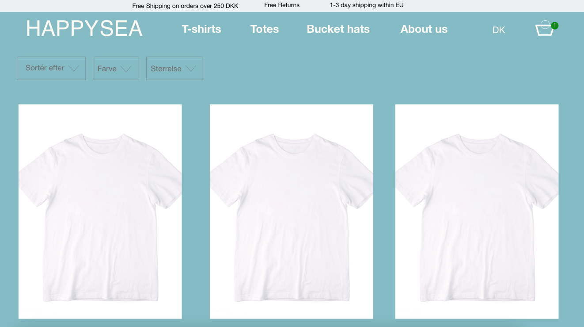

Tema 3: Grundlæggende UX
03.02.02 Løsning
I dette tema lærte jeg bl.a. om konceptudvikling og usp, samt målgruppe, afsender og modtager. I forbindelse med at vi skulle lave en XD-prototype af en T-shirt webshop, lærte jeg at lave animationer, i XD, så prototypen efterlignede en potentiel rigtig webshop, på bedste vis. Vi lærte, at den første idé ikke nødvendigvis er den bedste, da vi lavede sprintprocessen, og fik lov til at se og bedømme hinandens idéer anonymt.
Det interessante med tema 3 var, at vi havde en hel research fase, hvor vi lærte forskellige måder, hvorpå vi kunne lære en potentiel målgruppe bedre at kende på. Heriblandt, brugte jeg research metoderne: interview og observation, til at finde mere ud af min målgruppes væremåde og vaner, hvilket hjalp mig til at spore ind på et koncept, der var relevant senere hen, i forløbet. Det var svært til tider, helt at forstå, hvorfor vi skulle lave så meget reel research, men, det gav mening, da vi skulle bruge vores indsigter, fra research fasen, til at designe vores webshopprototype, efterfølgende.
03.03.02 Pitch